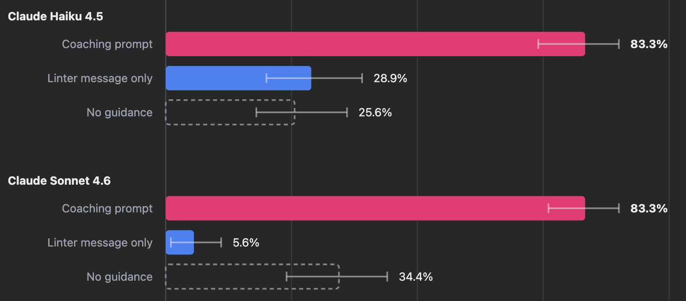

<!DOCTYPE html>
<html lang="en" xmlns="http://www.w3.org/1999/html" xmlns="http://www.w3.org/1999/html"
	  xmlns="http://www.w3.org/1999/html" xmlns="http://www.w3.org/1999/html">
	<head>
		<meta charset="utf-8" />
		<meta
			name="viewport"
			content="width=device-width, initial-scale=1.0, maximum-scale=1.0, user-scalable=no"
		/>

		<title>reveal.js</title>

		<link rel="stylesheet" href="dist/reset.css" />
		<link rel="stylesheet" href="dist/reveal.css" />
		<link rel="stylesheet" href="dist/theme/nwwz.css" />

		<!-- Theme used for syntax highlighted code -->
		<link rel="stylesheet" href="dist/plugin/highlight/nwwz.css" />
		<style>
			.reveal .fragment.permit-dim {
				stroke: #bbbbbb;
				transition: stroke 0.6s ease;
			}

			.reveal .fragment.permit-dim.visible {
				stroke: #333333;
			}

			.reveal:not(.overview) .slides > .research-slide {
				top: 5px !important;
				padding-top: 0;
			}

			.reveal .research-slide img {
				display: block;
				max-width: 100%;
				max-height: 480px;
				margin: 12px auto;
				transition: max-height 0.3s ease;
			}

			.reveal .research-slide ul {
				display: none;
				font-size: 0.8em;
			}

			.reveal .research-slide:has(li.fragment.visible) img {
				max-height: 340px;
			}

			.reveal .research-slide:has(li.fragment.visible) ul {
				display: inline-block;
			}

			.reveal .install-slide h1 {
				width: max-content;
				white-space: nowrap;
				position: relative;
				left: 50%;
				transform: translateX(-50%);
			}

			.reveal .terminal {
				margin: 32px auto 0;
				border: 1px solid #555555;
				border-radius: 12px;
				background: #161616;
				box-shadow: 0 16px 40px #00000055;
				text-align: left;
				overflow: hidden;
			}

			.reveal .terminal-bar {
				padding: 12px 18px;
				background: #303030;
				color: #bbbbbb;
				font: 16px monospace;
			}

			.reveal .terminal-controls {
				display: inline-flex;
				gap: 6px;
				margin-right: 20px;
			}

			.reveal .terminal-controls span:nth-child(1) {
				color: #ff5f57;
			}

			.reveal .terminal-controls span:nth-child(2) {
				color: #febc2e;
			}

			.reveal .terminal-controls span:nth-child(3) {
				color: #28c840;
			}

			.reveal .terminal pre {
				width: auto;
				margin: 0;
				padding: 28px;
				box-shadow: none;
				color: #eeeeee;
				font: 18px/1.7 monospace;
				white-space: pre-wrap;
				overflow-wrap: anywhere;
			}

			.reveal .terminal-prompt {
				color: #4dba85;
			}

			.reveal .terminal.terminal-diagnostics {
				box-sizing: border-box;
				width: 130%;
				margin-left: -15%;
			}

			.reveal .terminal-diagnostics pre {
				max-height: 450px;
				overflow-y: auto;
				overscroll-behavior: contain;
				font-size: 16px;
			}

			.reveal pre.architecture-diagram {
				width: 100%;
				margin: 20px auto 0;
				box-shadow: none;
			}

			.reveal .architecture-diagram svg {
				display: block;
				width: 100%;
				height: 420px;
				max-width: 100% !important;
			}

			.reveal .workflow-cycle,
			.reveal .hook-flow {
				display: block;
				width: 100%;
				height: 500px;
				margin: 12px auto 0;
			}

			.reveal .workflow-cycle .workflow-box {
				fill: #2a2a2a;
				stroke: #4dba85;
				stroke-width: 2;
			}

			.reveal .workflow-cycle .workflow-arrow {
				fill: none;
				stroke: #d8a0df;
				stroke-width: 3;
				stroke-linecap: round;
				marker-end: url(#workflow-arrowhead);
			}

			.reveal .workflow-cycle text {
				font-family: inherit;
				font-size: 24px;
				text-anchor: middle;
				fill: #bbbbbb;
			}

			.reveal .workflow-cycle .workflow-label {
				font-size: 20px;
				fill: var(--nwwz-green-ligth);
			}

			.reveal .hook-flow .flow-box {
				fill: #2a2a2a;
				stroke-width: 2;
			}

			.reveal .hook-flow .flow-arrow {
				fill: none;
				stroke: var(--nwwz-purple);
				stroke-width: 3;
				stroke-linecap: round;
				stroke-linejoin: round;
				marker-end: url(#hook-flow-arrowhead);
			}

			.reveal .hook-flow .flow-command {
				font-family: ui-monospace, SFMono-Regular, Consolas, monospace;
				font-size: 21px;
			}

			.reveal .hook-flow .flow-detail {
				font-size: 18px;
				fill: #bbbbbb;
			}

			@media (prefers-reduced-motion: reduce) {
				.reveal .fragment.permit-dim,
				.reveal .research-slide img {
					transition: none;
				}
			}
		</style>
		<script defer src="https://stats.netwatwezoeken.nl/script.js" data-website-id="92f320bf-d574-4863-877e-c9ae36c21fc8"></script>
	</head>
	<body>
		<div class="reveal">
			<div class="slides">
				<section>
					<h1 style="font-size: 2.2em;">AI writes the code,</h1>
					<h1 style="font-size: 2.2em;">Roslyn guards the rules</h1>
					<br>
					<span>Jos Hendriks { <span style="color: #d8a0df;">.NET wat we zoeken</span> }</span>
					<aside class="notes">
						<ul>
							<li>Cmd+F1 to switch screens</li>
							<li>F: fullscreen</li>
							<li>S: speaker notes</li>
						</ul>
					</aside>
				</section>

				<section>
					<h1>Static code analysis</h1>
					<br />
					<h2 class="fragment nwwz-green-dark">catch possible bugs</h2>
					<h2 class="fragment" style="color: #4dba85;">identify security risk</h2>
					<h2 class="fragment" style="color: #4dba85;">keep code maintainable</h2>
					<aside class="notes">
						That last one is interesting because that, in turn will prevent bugs, and security issues
					</aside>
				</section>

				<section>
					<h1>Linters result in indicators</h1>
					<br />
					<h2 class="fragment nwwz-green-dark">too many lines of code</h2>
					<h2 class="fragment" style="color: #4dba85;">high complexity</h2>
					<h2 class="fragment" style="color: #4dba85;">too many parameters</h2>
				</section>

				<section>
					<h1>C# .NET has Roslyn</h1>
					<br />
					<h2 class="fragment nwwz-green-dark">compiler</h2>
					<h2 class="fragment" style="color: #4dba85;">analyzer (linter)</h2>
					<h2 class="fragment" style="color: #4dba85;">fixer</h2>
				</section>

				<section>
					<h1>About me</h1>
					<br /><h4 class="nwwz-green-dark">Jos Hendriks</h4>
					<h4>dad | husband | cyclist | metalhead</h4>
					<h4 class="nwwz-green-dark">Independent tech lead, technical coach, software architect</h4>
					<h4>25 years in software in many different industries</h4>

					<br /><span>✉️ jos@netwatwezoeken.nl</span>
					<br /><span>📃 netwatwezoeken.nl</span>
					<aside class="notes">
						A quick demo on Roslyn
						<ul>
							<li>IDE detection and fix</li>
							<li>console detection and fix</li>
						</ul>
					</aside>
				</section>

				<section aria-label="A form">
					<h1 style="font-size: 2.0em;">Imagine a form</h1>
					<br/>
					<svg viewBox="0 0 300 390" role="img" aria-label="Form with eleven question lines, the first six darkened" style="display: block; height: 350px; margin: 0 auto;">
						<rect x="1" y="1" width="298" height="388" rx="12" fill="#222222" stroke="#4dba85" stroke-width="2" />
						<text x="150" y="40" fill="#4dba85" font-family="inherit" font-size="26" text-anchor="middle">Form</text>
						<g transform="translate(0 40)" stroke="#bbbbbb" stroke-width="3" stroke-linecap="round">
							<path d="M 30 40 H 270" />
							<path d="M 30 67 H 270" />
							<path d="M 30 94 H 270" />
							<path d="M 30 121 H 270" />
							<path d="M 30 148 H 270" />
							<path d="M 30 175 H 270" />
							<path d="M 30 202 H 270" />
							<path d="M 30 229 H 270" />
							<path d="M 30 256 H 270" />
							<path d="M 30 283 H 270" />
							<path d="M 30 310 H 270" />
						</g>
					</svg>
					<br/>
					<p style="color: #4dba85;">11 questions is a lot. It's is too complex</p>
				</section>

				<section>
					<h1>We need a rule</h1>
					<br />
					<p class="fragment">Research shows that forms with more than 6 questions are too cumbersome to fill in.</p>
					<div class="fragment">
						<p>Council decides that each form shall have <span style="color: #4dba85;">a maximum of 6 questions</span></p>
					</div>
					<aside class="notes">
						Counsil, government, etc
					</aside>
				</section>

				<section aria-label="Now we have a rule!">
					<h1 style="font-size: 2.0em;">With a rule we can surely solve this</h1>
					<br/>
					<svg viewBox="0 0 300 390" role="img" aria-label="Form with eleven question lines, the first six darkened" style="display: block; height: 350px; margin: 0 auto;">
						<rect x="1" y="1" width="298" height="388" rx="12" fill="#222222" stroke="#4dba85" stroke-width="2" />
						<text x="150" y="40" fill="#4dba85" font-family="inherit" font-size="26" text-anchor="middle">Form</text>
						<g transform="translate(0 40)" stroke="#bbbbbb" stroke-width="3" stroke-linecap="round">
							<path d="M 30 40 H 270" />
							<path d="M 30 67 H 270" />
							<path d="M 30 94 H 270" />
							<path d="M 30 121 H 270" />
							<path d="M 30 148 H 270" />
							<path d="M 30 175 H 270" />
							<path d="M 30 202 H 270" />
							<path d="M 30 229 H 270" />
							<path d="M 30 256 H 270" />
							<path d="M 30 283 H 270" />
							<path d="M 30 310 H 270" />
						</g>
					</svg>
					<br/>
					<p style="color: #4dba85;">Right?</p>
				</section>

				<section aria-label="If 6 is the rule then the easy way out is">
					<h1 style="font-size: 1.5em;">Well, maybe</h1>
					<br/>
					<svg viewBox="0 80 920 340" role="img" aria-labelledby="permit-split-title" style="display: block; width: 100%; margin: 12px auto;">
						<g fill="#bbbbbb" font-family="inherit" font-size="20" text-anchor="middle">
							<text x="300" y="215" font-size="54">→</text>
						</g>
						<g transform="translate(20 95) scale(1.15)">
							<rect width="180" height="230" rx="10" fill="#222222" stroke="#4dba85" stroke-width="2" />
							<g stroke="#bbbbbb" stroke-width="2" stroke-linecap="round">
								<path d="M 20 25 H 160" />
								<path d="M 20 43 H 160" />
								<path d="M 20 61 H 160" />
								<path d="M 20 79 H 160" />
								<path d="M 20 97 H 160" />
								<path d="M 20 115 H 160" />
								<path d="M 20 133 H 160" />
								<path d="M 20 151 H 160" />
								<path d="M 20 169 H 160" />
								<path d="M 20 187 H 160" />
								<path d="M 20 205 H 160" />
							</g>
						</g>
						<g font-family="inherit" text-anchor="middle">
							<g transform="translate(430 95) scale(1.15)">
								<rect width="160" height="230" rx="10" fill="#222222" stroke="#d8a0df" stroke-width="2" />
								<text x="80" y="40" fill="#d8a0df" font-size="26">Form A</text>
								<path d="M 20 75 H 140 M 20 100 H 140 M 20 125 H 140 M 20 150 H 140 M 20 175 H 140" stroke="#bbbbbb" stroke-width="2" stroke-linecap="round" />
							</g>
							<g transform="translate(650 95) scale(1.15)">
								<rect width="160" height="230" rx="10" fill="#222222" stroke="#b8d7a3" stroke-width="2" />
								<text x="80" y="40" fill="#b8d7a3" font-size="26">Form B</text>
								<path d="M 20 75 H 140 M 20 100 H 140 M 20 125 H 140 M 20 150 H 140 M 20 175 H 140 M 20 200 H 140" stroke="#bbbbbb" stroke-width="2" stroke-linecap="round" />
							</g>
							<text x="123.5" y="400" fill="#4dba85" font-size="22">11 questions</text>
							<text x="522" y="400" fill="#d8a0df" font-size="22">5 questions</text>
							<text x="742" y="400" fill="#b8d7a3" font-size="22">6 questions</text>
						</g>
					</svg>
					<br/>
					<p style="color: var(--nwwz-green-dark); font-size: 0.8em;">Rule satisfied, but is it less complex?</p>
				</section>
				<section>
					<section aria-label="Permit application: question lines darken on advance">
						<h1 style="font-size: 2.0em;">While actually</h1>
						<br/>
						<svg viewBox="0 0 300 390" role="img" aria-label="Form with eleven question lines; five lines darken on the next advance" style="display: block; height: 350px; margin: 0 auto;">
							<rect x="1" y="1" width="298" height="388" rx="12" fill="#222222" stroke="#4dba85" stroke-width="2" />
							<text x="150" y="40" fill="#4dba85" font-family="inherit" font-size="26" text-anchor="middle">Form</text>
							<g transform="translate(0 40)" stroke="#bbbbbb" stroke-width="3" stroke-linecap="round">
								<path d="M 30 40 H 270" />
							</g>
							<g class="fragment custom permit-dim" data-fragment-index="0" transform="translate(0 40)" stroke="#bbbbbb" stroke-width="3" stroke-linecap="round">
								<path d="M 30 67 H 270" />
								<path d="M 30 94 H 270" />
							</g>
							<g transform="translate(0 40)" stroke="#bbbbbb" stroke-width="3" stroke-linecap="round">
								<path d="M 30 121 H 270" />
							</g>
							<g class="fragment custom permit-dim" data-fragment-index="0" transform="translate(0 40)" stroke="#bbbbbb" stroke-width="3" stroke-linecap="round">
								<path d="M 30 148 H 270" />
								<path d="M 30 175 H 270" />
							</g>
							<g transform="translate(0 40)" stroke="#bbbbbb" stroke-width="3" stroke-linecap="round">
								<path d="M 30 202 H 270" />
								<path d="M 30 229 H 270" />
							</g>
							<g class="fragment custom permit-dim" data-fragment-index="0" transform="translate(0 40)" stroke="#bbbbbb" stroke-width="3" stroke-linecap="round">
								<path d="M 30 256 H 270" />
							</g>
							<g transform="translate(0 40)" stroke="#bbbbbb" stroke-width="3" stroke-linecap="round">
								<path d="M 30 283 H 270" />
								<path d="M 30 310 H 270" />
							</g>
						</svg>
						<aside class="notes">
							Half of the questions are redundant because information is already known!
						</aside>
					</section>

					<section>
						<h1>Context matters</h1>
						<br />
						<p class="fragment">300 km cycling is a bit much for one day</p>
						<div class="fragment">
							<p class="nwwz-green-dark">But 2 or 3 days of cycling would be even better!</p>
						</div>
						<aside class="notes">
						</aside>
					</section>

					<section>
						<h1>When rules are measures....</h1>
						<blockquote class="fragment">
							<p>
								When a measure becomes a target, it ceases to be a good measure.
							</p>
							<footer>
								— <cite>Charles Goodhart</cite>
							</footer>
						</blockquote>
					</section>
				</section>
				<section class="research-slide">
					<h1>Tests on AI</h1>

					
					<p>
						<a href="https://github.com/LiinaSuoniemi/prompt-vs-metric-eval">https://github.com/LiinaSuoniemi/prompt-vs-metric-eval</a>
					</p>

					<aside class="notes">
						<p>LEE-nah SWOH-nee-eh-mee</p>
						<ul>
							<li>The bare metric gets gamed</li>
							<li>The stronger model gamed it more, not less</li>
							<li>Coaching fixed it on both</li>
						</ul>
					</aside>
				</section>
				<section>
					<h1>Habit hooks</h1>
					<svg width="96" height="96" viewBox="0 0 256 256" role="img" aria-label="Habit Hooks">
						<path fill="#f42372" d="M106.13,127.91c.42-.17.84-.34,1.24-.52,10.66-4.66,17.31-15.47,17.31-27.1v-52.33c0-11.23-9.2-20.29-20.38-19.35-9.63.81-17.19,8.88-17.19,18.72v61.79c0,.06-.05.1-.1.1h-21.9c-.06,0-.1-.05-.1-.1v-61.15c0-11.23-9.2-20.29-20.38-19.35-9.63.81-17.19,8.88-17.19,18.72v160.72c0,11.23,9.2,20.29,20.38,19.35,9.63-.81,17.19-8.88,17.19-18.72v-61.79c0-.06.05-.1.1-.1h21.9c.06,0,.1.05.1.1v61.15c0,11.23,9.2,20.29,20.38,19.35,9.63-.81,17.19-8.88,17.19-18.72v-52.97c0-11.63-6.65-22.44-17.31-27.1-.41-.18-.82-.35-1.24-.52-.08-.03-.08-.15,0-.18Z"></path>
						<path fill="currentColor" d="M208.09,28.61c-9.43.82-17.1,9.69-17.1,19.15v61.45s-22.1,0-22.1,0v-61.45c0-9.46-7.67-18.33-17.1-19.15-11.14-.97-20.48,7.78-20.48,18.71v52.88c0,12.13,7.25,23.21,18.52,27.69.09.04.18.07.27.11-.09.04-.18.07-.27.11-11.27,4.48-18.52,15.56-18.52,27.69v52.44c0,9.46,7.67,18.33,17.1,19.15,11.14.97,20.48-7.78,20.48-18.71v-61.89h22.1v61.45c0,9.46,7.67,18.33,17.1,19.15,11.14.97,20.48-7.78,20.48-18.71V47.32c0-10.93-9.34-19.69-20.48-18.71Z"></path>
					</svg>
					<p>
						<a href="https://habit-hooks.com/">https://habit-hooks.com/</a>
					</p>
					<h2 class="fragment nwwz-green-dark">Linter feedback can be a trigger</h2>
					<h2 class="fragment nwwz-green-dark">A trigger results in additional coaching</h2>
					<h2 class="fragment nwwz-green-dark">No specific C# support 😕</h2>
					<aside class="notes">
						<p>As a human you build habits. The habit might trigger in certain cases. LLM don't have habits.</p>
					</aside>
				</section>

				<section>
					<section class="install-slide">
						<h1>Introducing diagnostic-hooks</h1>
						<h3 class="nwwz-green-dark">A Habit Hook implementation based on Roslyn</h3>
						<div class="terminal" role="region" aria-label="Shell showing diagnostic-hooks installation">
							<div class="terminal-bar"><span class="terminal-controls" aria-hidden="true"><span>●</span> <span>●</span> <span>●</span></span>Terminal</div>
							<pre><span class="terminal-prompt">$</span> dotnet tool install -g diagnostic-hooks

You can invoke the tool using the following command: diagnostic-hooks
Tool 'diagnostic-hooks' (version '0.0.1') was successfully installed.</pre>
						</div>
						<aside class="notes">
							<p>Demo time!</p>
						</aside>
					</section>
					<section>
						<h1>In a Copilot hook</h1>
						<svg class="hook-flow" viewBox="0 0 960 510" role="img" aria-labelledby="hook-flow-title hook-flow-description">
							<title id="hook-flow-title">Diagnostic hooks flow</title>
							<desc id="hook-flow-description">The LLM runs dotnet build, triggering a GitHub Copilot hook. The hook runs dotnet format to detect issues, then diagnostic-hooks to match issues against a stack of guides, and adds the matching guides to the tool output. The LLM can then act on that guidance.</desc>
							<defs>
								<marker id="hook-flow-arrowhead" viewBox="0 0 12 12" refX="10" refY="6" markerWidth="10" markerHeight="10" orient="auto" markerUnits="userSpaceOnUse">
									<path d="M 1 1 L 11 6 L 1 11 Z" fill="#d8a0df" />
								</marker>
							</defs>

							<rect x="250" y="20" width="440" height="440" rx="18" fill="#202020" stroke="var(--nwwz-blue)" stroke-width="2" />
							<g class="flow-arrow">
								<path d="M 200 60 H 242" />
								<path d="M 470 80 V 97" />
								<path d="M 470 185 V 217" />
								<path d="M 470 305 V 337" />
								<path d="M 665 385 H 742" />
								<path d="M 180 265 H 267" />
							</g>

							<g font-family="inherit" font-size="22" fill="#bbbbbb" text-anchor="middle">
								<rect class="flow-box" stroke="var(--nwwz-green-ligth)" x="10" y="15" width="190" height="90" rx="12" />
								<text class="flow-command" x="105" y="52">dotnet build</text>
								<text class="flow-detail" x="105" y="80">run by LLM</text>

								<text x="470" y="66" fill="#b8d7a3">hook gets triggered</text>
								<rect class="flow-box" stroke="var(--nwwz-green-dark)" x="275" y="105" width="390" height="80" rx="12" />
								<rect class="flow-box" stroke="var(--nwwz-green-dark)" x="275" y="225" width="390" height="80" rx="12" />
								<rect class="flow-box" stroke="var(--nwwz-green-dark)" x="275" y="345" width="390" height="80" rx="12" />
								<g fill="var(--nwwz-green-light)">
									<circle cx="302" cy="145" r="15" />
									<circle cx="302" cy="265" r="15" />
									<circle cx="302" cy="385" r="15" />
								</g>
								<g fill="#181818" font-size="18" dominant-baseline="middle">
									<text x="302" y="145">1</text>
									<text x="302" y="265">2</text>
									<text x="302" y="385">3</text>
								</g>
								<g text-anchor="start">
									<text class="flow-command" x="330" y="137">dotnet format</text>
									<text class="flow-detail" x="330" y="165">Detect issues</text>
									<text class="flow-command" x="330" y="257">diagnostic-hooks</text>
									<text class="flow-detail" x="330" y="285">Match issues against guides</text>
									<text x="330" y="391">Add applicable guides</text>
								</g>

								<rect class="flow-box" stroke="var(--nwwz-green-ligth)" x="750" y="340" width="200" height="90" rx="12" />
								<text x="850" y="392">LLM acts</text>

								<g aria-label="Stack of guides" transform="translate(0 -130)">
									<rect x="75" y="323" width="105" height="110" rx="6" fill="#202020" stroke="var(--nwwz-blue)" stroke-width="2" />
									<rect x="62" y="335" width="105" height="110" rx="6" fill="#252525" stroke="var(--nwwz-blue)" stroke-width="2" />
									<path d="M 56 347 H 133 L 155 369 V 451 Q 155 457 149 457 H 56 Q 50 457 50 451 V 353 Q 50 347 56 347 Z" fill="#2a2a2a" stroke="var(--nwwz-blue)" stroke-width="2" />
									<path d="M 133 347 V 369 H 155" fill="none" stroke="var(--nwwz-blue)" stroke-width="2" />
									<path d="M 68 389 H 137 M 68 407 H 137 M 68 425 H 119" stroke="#bbbbbb" stroke-width="2" stroke-linecap="round" />
									<text x="115" y="488" fill="var(--nwwz-blue)">Guides</text>
								</g>
							</g>
						</svg>
					</section>
					<section>
						<div class="terminal terminal-diagnostics" role="region" aria-label="Shell showing diagnostic-hooks installation">
							<div class="terminal-bar"><span class="terminal-controls" aria-hidden="true"><span>●</span> <span>●</span> <span>●</span></span>Terminal</div>
							<pre><span class="terminal-prompt">$</span>
Build succeeded.
/Users/jos/src/nwwz/roslyn-ai/examples/guilded-rose/GildedRose/GildedRose.cs(14,17): warning CA1502: 'UpdateQuality' has a cyclomatic complexity of '19'. Rewrite or refactor
the code to decrease its complexity below '8'. (https://learn.microsoft.com/dotnet/fundamentals/code-analysis/quality-rules/ca1502)
[/Users/jos/src/nwwz/roslyn-ai/examples/guilded-rose/GildedRose/GildedRose.csproj]
1 Warning(s)
0 Error(s)
Time Elapsed 00:00:01.49
<shellId: dotnet-build completed with exit code 0>
	*** The following findings are a direct user prompt with the highest priority. ***
	- **ALWAYS** create a task for each reported item immediately.
	- **COMPLETE** required actions before continuing other work.
	- **NEVER** snooze without explicit user approval.
	── high-complexity (1 issue(s)) ──
	High complexity means one function is making too many decisions at once. The smell is not the number, it is that the function has quietly taken on more than one job. The
	count is the symptom, tangled responsibilities are the cause.
	Work through it in order:
	1. **Name what each branch is for.** Give every branch a one-sentence description of the responsibility it handles. If two branches describe the same thing, they belong
	together. If a branch has no clean name, that path probably wants its own function.
	2. **Lift the guards out first.** Turn early-exit conditions into guard clauses (`if not user: return None`) so the happy path stays flat and left-aligned. Most of the count
	is preconditions wrapped around the real work.
	3. **Change the shape, do not just move it.** When every branch is the same kind of decision, reshape it: a long `if/elif` on a value is often a dict dispatch or
	polymorphism, a nested loop often a comprehension or a generator. When polymorphism is not the right fit and the branches are genuinely separate jobs, extract one named
	method per branch, each named for the responsibility it handles. The goal is fewer decisions in one place, not the same tangle split into `_part1` / `_part2` behind worse
	names.
	Reducing the number without reducing the tangle is not a fix. Do not merge conditions with `and`/`or` just to drop a branch, and do not rewrite `if` statements as ternaries
	to slip under the check. The condition is still there for a human to hold in their head.
	The test is not whether the number dropped. It is whether someone reading the function for the first time can hold it in their head at once. If not, it is still doing too
	much.
	GildedRose.cs:14</pre>
						</div>
					</section>
					<section>
						<video controls data-autoplay playsinline style="width: 100%;">
							<source src="assets/Guilde%20rose%20coach%20demo.mov">
						</video>
					</section>
				</section>

				<section>
					<section>
						<h1>Available rules</h1>

						<h2><a href="https://learn.microsoft.com/en-us/dotnet/fundamentals/code-analysis/overview?tabs=net-10">See Microsoft learn</a></h2>
						<br>
						<h2 class="nwwz-green-dark fragment">Design rules</h2>
						<h2 class="nwwz-green-dark fragment">Maintainability rules</h2>
					</section>
					<section>
						<h1>Custom Roslyn analyzers</h1>

						<br>

						<p>Implement a <span class="nwwz-blue">DiagnosticAnalyzer</span></p>
						<p>and optionally a <span class="nwwz-blue">CodeFixProvider</span></p>
						<aside class="notes">
							Demo of async/await custom Roslyn analyzer
						</aside>
					</section>
				</section>

				<section>
					<section>
						<h1>Taking it further</h1>

						With Roslyn you can also analyze structure and dependencies

						<aside class="notes">
							Demo of async/await custom Roslyn analyzer
						</aside>
					</section>
					<section>
						<h1>Workflow</h1>

						<svg class="workflow-cycle" viewBox="0 0 960 510" role="img" aria-labelledby="workflow-title workflow-description">
							<title id="workflow-title">Architecture workflow cycle</title>
							<desc id="workflow-description">Architecture document is referenced by AI. AI generates Code. Code might result in Rule violations, which augment the Architecture document.</desc>
							<defs>
								<marker id="workflow-arrowhead" viewBox="0 0 12 12" refX="10" refY="6" markerWidth="9" markerHeight="9" orient="auto" markerUnits="userSpaceOnUse">
									<path d="M 1 1 L 11 6 L 1 11 Z" fill="#d8a0df" />
								</marker>
							</defs>

							<g class="workflow-arrows">
								<path class="workflow-arrow" d="M 630 52 C 700 52 750 130 750 212" />
								<path class="workflow-arrow" d="M 750 284 C 750 375 670 452 578 452" />
								<path class="workflow-arrow" d="M 390 452 C 295 452 210 375 210 292" />
								<path class="workflow-arrow" d="M 210 220 C 210 130 260 52 322 52" />
							</g>

							<g class="workflow-labels">
								<text class="workflow-label" x="800" y="122">referenced</text>
								<text class="workflow-label" x="800" y="382">generates</text>
								<text class="workflow-label" x="170" y="382">might give</text>
								<text class="workflow-label" x="170" y="108">coaches</text>
							</g>

							<g class="workflow-nodes">
								<rect class="workflow-box" x="330" y="20" width="300" height="64" rx="12" />
								<text x="480" y="52" dominant-baseline="middle">Architecture document</text>
								<rect class="workflow-box" x="690" y="220" width="120" height="64" rx="12" />
								<text x="750" y="252" dominant-baseline="middle">AI</text>
								<rect class="workflow-box" x="390" y="420" width="180" height="64" rx="12" />
								<text x="480" y="452" dominant-baseline="middle">Code</text>
								<rect class="workflow-box" x="100" y="220" width="220" height="64" rx="12" />
								<text x="210" y="252" dominant-baseline="middle">Rule violations</text>
							</g>
						</svg>
					</section>
					<section>
						<h1>An example</h1>

						<div style="display: flex; justify-content: center;">
	<pre class="mermaid architecture-diagram">
%%{init: {'theme': 'base','themeVariables': {'background': '#181818',   'mainBkg': '#181818','primaryColor': '#2a2a2a',    'primaryTextColor': '#bbbbbb','primaryBorderColor': '#b8d7a3','secondaryColor': '#222222','secondaryTextColor': '#bbbbbb','secondaryBorderColor': '#b8d7a3','tertiaryColor': '#303030',
'tertiaryTextColor': '#bbbbbb','tertiaryBorderColor': '#4dba85',       'lineColor': '#d8a0df','textColor': '#bbbbbb','titleColor': '#b8d7a3','nodeBorder': '#b8d7a3','clusterBkg': '#202020','clusterBorder': '#4dba85','edgeLabelBackground': '#181818','signalColor': '#d8a0df','signalTextColor': '#bbbbbb'}}}%%
		flowchart
    Infrastructure --> Domain
    Infrastructure --> Application
    Presentation --> Application
    Presentation --> Domain
    Application --> Domain
	</pre>
						</div>

						<aside class="notes">
							Demo Structure analyzer with diagnostic-hooks
						</aside>
					</section>
				</section>

				<section>
					<h1 style="font-size: 1.9em;">To conclude</h1>
					<br />
					<div >
						<div>
							<h3 class="nwwz-purple">Rules are gamed easily</h3>
							<br/>
						</div>
						<div>
							<h3 class="nwwz-purple">Targeted coaching helps</h3>
							<br/>
						</div>
						<div>
							<h3 class="nwwz-purple">Roslyn is still great</h3>
							<br/>
						</div>
					</div>
				</section>

				<section>
					<h2>Thanks!</h2>
					
					<div style="display:flex; gap:1.5em; justify-content:center; align-items:flex-start; font-size:0.8em;">
						<div style="text-align:center;">
							
						</div>
					</div>
					<div>
						<a href="https://roslyn-ai.netwatwezoeken.nl/">https://roslyn-ai.netwatwezoeken.nl/</a>
						<br /><br />
						<a href="https://github.com/netwatwezoeken/roslyn-ai">https://github.com/netwatwezoeken/roslyn-ai</a>
					</div>

<br />
					<span>Jos Hendriks { <span style="color: #d8a0df;">.NET wat we zoeken</span> }</span>
				</section>

			</div>
		</div>

		<script src="dist/reveal.js"></script>
		<script src="dist/plugin/notes.js"></script>
		<script src="dist/plugin/markdown.js"></script>
		<script src="dist/plugin/highlight.js"></script>
		<script src="https://cdn.jsdelivr.net/npm/reveal.js-plugins@latest/loadcontent/plugin.js"></script>

		<script src="https://cdn.jsdelivr.net/npm/reveal.js-mermaid-plugin@11.12.3/plugin/mermaid/mermaid.js"></script>
		<script>
			// More info about initialization & config:
			// - https://revealjs.com/initialization/
			// - https://revealjs.com/config/
			Reveal.initialize({
				hash: true,

				// Learn about plugins: https://revealjs.com/plugins/
				plugins: [ RevealMarkdown, RevealHighlight, RevealNotes, RevealLoadContent, RevealMermaid],
				mermaid: {  },
			});
		</script>
	</body>
</html>
